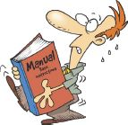
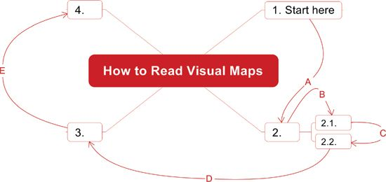
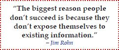

“CL” refers to this book — Concise Learning.
“CLM” refers to the Concise Learning method.
Read visual maps clockwise from top right and from top to bottom.

KINDLE NOTE: If a diagram in the Kindle is difficult to see, you can enlarge it by first moving the cursor down once so that it's to the left of the diagram, then moving the cursor right once to highlight the diagram, and finally pressing the cursor once to enlarge the diagram. When done viewing the enlarged diagram, press the cursor again to return to the normal screen.
The order of chapters 2 and 3 are interchangeable.
CLM is your key to better learning and better grades. As you start implementing the CLM, your learning will increase. As you master the CLM, your learning will skyrocket. Refer to this diagram for a quick synopsis of the method.
